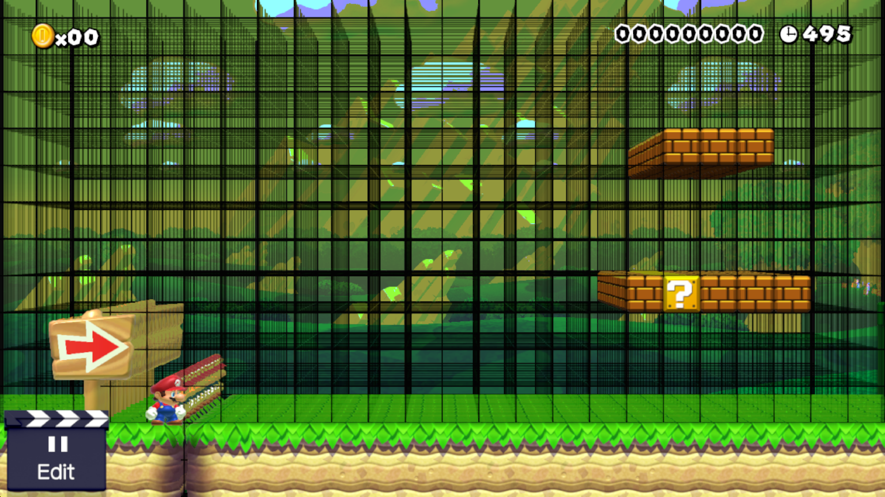

Since: 12-29-18
|
|
|
Preview
|

| General information | |
|---|---|
| Name | MarioPossamato |
| User ID | 1425533397 |
| Groups | Normal users |
| Total posts | 10 (0.01 per day) (last post 303 days ago in Modded Nso Files (Project Releases)) |
| Registered on | 12-29-18, 09:43 pm (701 days ago) |
| Last view | 03-07-20, 07:33 am (267 days ago) at: /thread/541068215-modded-nso-files?post=1265852980 |
| Total stars received | 0 |
| Total stars given | 0 |
| Presentation | |
|---|---|
| Theme | New Super Mario Bros. Winter Night · By Dirbaio |
| Items per page | 20 posts, 50 threads |
| Layout | AcmlmBoard Layout |
| Language | Board default |
| RPG Status |
|---|
 |
You need to be logged in to post profile comments here.
Welcome! Even though I'm late.
|
 falling upwards
falling upwards This mod will work for Yuzu/Atmosphere users. Also, Super Mario Maker 2 may become glitchy (but by no means unplayable) after any of these patches have been applied. I recommend creating a course using the normal Nso and patching it after. Thanks to Comex for telling me how to edit the Nso file for Super Mario Maker 2. First, you will need HxD hex editor (any other hex editor will work, I just recommend HxD). Once you have downloaded and installed HxD hex editor, you will need to decompress your main Nso file so it can be edited. To decompress any Nso file, you will need hactool, which is a tool used for decompressing Nso files. Place both hactool.exe and your main Nso file on your Desktop, and open the Command Prompt by pressing the Windows key on your keyboard, type cmd and hit enter. Type, cd Desktop, hit enter and type, hactool --uncompressed=main_uncompressed -t nso0 main. It should decompress your main Nso file so it can be edited. Open HxD hex editor, and click the file button, then the open button, and choose the main Nso file on your Desktop. Press Ctrl + G, type the offset of the value you want to edit, and hit ok. Write the value specified in main_patches.txt to the bytes at the offset you specified, and press Ctrl + s to save your file when you have finished editing it. After that, you can load it with Yuzu or Atmosphere. Comex's Youtube Channel |
|
Posted on 01-31-20, 04:34 pm
in Modded Nso Files (rev. 4 by MarioPossamato on 02-01-20, 06:20 am) |
|---|
| A New Project For Super Mario Maker 2 What Does This Mod Change? • The M1 Woods BG Now Has A Separate Textures Per Screen; Download The Mod Here• The M3 Plain BG Now Has A Separate Textures Per Screen; • Pow Blocks Now Look And Act Like Peepas Without Wings And Like Red Koopa Troopas With Wings; • Red Koopa Troopas Models Are Now 1.25x Normal Size; • Normal And Sideways Springs Look And Act Like Bullet-Bills; • Small And Large Wigglers Act Like Poison Mushrooms; • Bloopers Now Look And Act Like Buzzy Beatles; • Small And Large Cannons Now Look And Act Like Blue Spiketops; • Magnum Killers Now Can Be Put Into Blasters, Blocks, Pipes, Clouds, And Clown Cars, And Can Have Wings Or A Parachute; • P-Switches Now Look And Act Like Poison Mushrooms, But Can Still Be Picked Up; • Goombas Now Act Like They Are In Lava When Killed; • Chain Chomps Now Act Like Koopa Clown Cars; • Clown Cars/Fire Clown Cars Now Can Be Placed In Claws; • Thwomps Can Now Be Placed Into Blocks, Blasters, And Pipes.  |
|
Posted on 01-24-20, 06:53 pm
in Content_Pack_2 (rev. 7 by MarioPossamato on 02-24-20, 05:25 am) |
|---|
|  This mod will only work for Cemu/Loadiine users. Also, Super Mario Maker may become glitchy (but by no means unplayable) after any of these patches have been applied. I recommend creating a course using the normal RPX and patching it after. Thanks to Comex for telling me how to edit the RPX file for Super Mario Maker. First, you will need HxD hex editor (any other hex editor will work, I just recommend HxD). Once you have downloaded and installed HxD hex editor, you will need to decompress your Block.rpx file so it can be edited. To decompress any .rpx file, you will need wiiurpxtool, which is a tool used for decompressing .rpx files. Place both wiiurpxtool.exe and your Block.rpx file on your Desktop, and open the Command Prompt by pressing the Windows key on your keyboard, type cmd and hit enter. Type, cd Desktop, hit enter and type, wiiurpxtool -d Block.rpx. It should say, decompressing, and will decompress your Block.rpx file so it can be edited. Open HxD hex editor, and click the file button, then the open button, and choose the Block.rpx file on your Desktop. Press Ctrl + G, type the offset of the value you want to edit, and hit ok. Write the value specified in Block.rpx_Patches.txt to the bytes at the offset you specified, and press Ctrl + s to save your file when you have finished editing it. If you're a Loadiine user, then after you've finished editing the Block.rpx file, you will need to decompress it with wiiurpxtool again. Note: This is not required for Cemu, only Loadiine. Open Command Prompt again, and type, cd Desktop, hit enter and type, wiiurpxtool -d Block.rpx. It should say, decompressing again, and at that point it will run in either Loadiine or Cemu. Comex's Youtube Channel GRAnimated's Youtube Channel |
|
Posted on 04-25-19, 10:44 pm
in Modded RPX Files (rev. 88 by MarioPossamato on 12-08-19, 08:50 pm) |
|---|
Just a simple mod which changes the ground theme music in the Super Mario Bros. theme as well as many the background and many sprites, which Adds a Yo! Jaku theme to Super Mario Maker. Download (Wii U) |
| Posted on 04-25-19, 10:21 pm in Yo! Jaku |
|---|
| No, I don't know why it shows up on the 3ds home page, but I probably said it was for 3ds accidentally :P oops. If it's the same as Wii U, I guess it could work, though... |
| Posted on 03-25-19, 12:00 am in Content_Pack |
|---|
| No, it wasn't supposed to be, but I guess it could be :P |
| Posted on 02-26-19, 03:39 am in Content_Pack |
|---|
| Just a simple mod which changes the ground theme music in all four Mario styles, as well as give Mario, Yoshi, and specific enemies special abilities (i.e. the ability to eat Bowser with Yoshi, have all NSMBU abilities for Mario in all game styles, as well as the ability to throw upwards in all four game styles). WARNING! Do not place any items in Clown cars with this mod loaded, otherwise you run the risk of your game crashing! If you want items/enemies in clown cars, I suggest placing the items/enemies above the Clown car to fall into. Thanks for checking out this mod :) If you would like to see some of the stuff the mod changes, go to this link. Download the mod there.  |
|
Posted on 02-22-19, 06:00 pm
in Content_Pack (rev. 3 by MarioPossamato on 02-22-19, 06:22 pm) |
|---|
| I have some tutorials on my Youtube channel (Mario Possamato on Youtube) where you can find out how to use tcpGecko dotNET to memory edit (memory mod) Super Mario Maker |
| Posted on 02-11-19, 08:18 pm in Timer Edit ? |
|---|